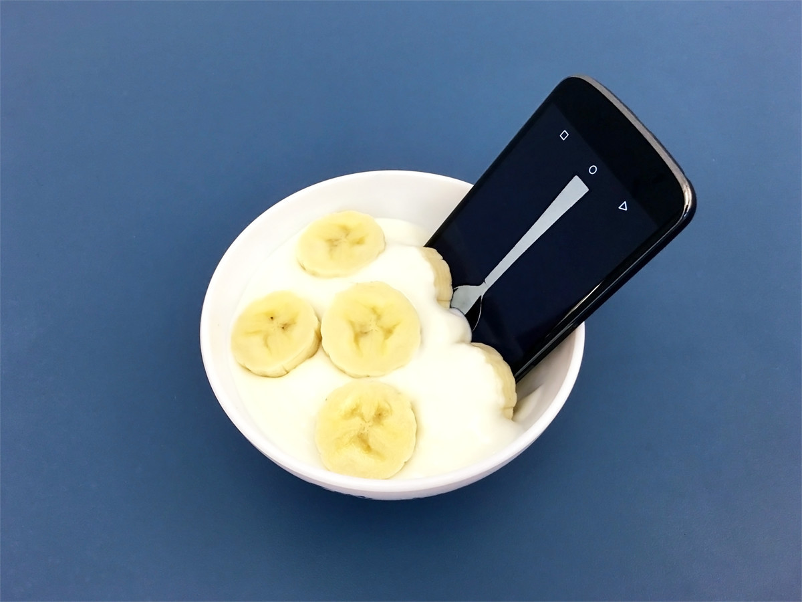
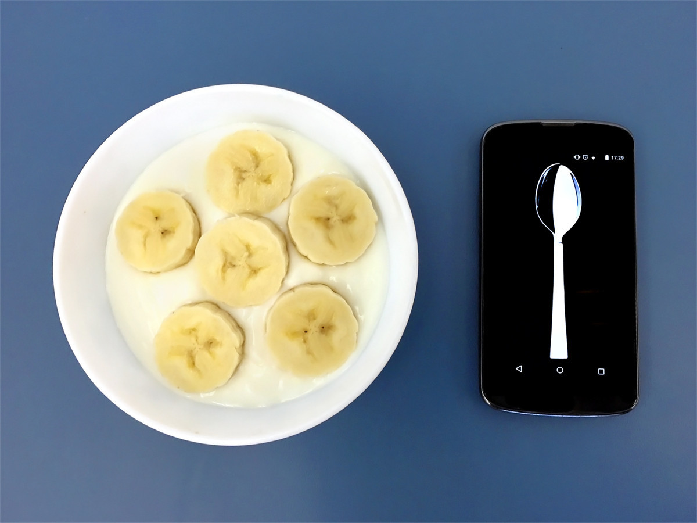

THE SPOON APP
The Spoon App allows you to use your phone as a spoon. It works best on a phone you can fit in your mouth.

We live in a time when much of what we interact with on a day to day basis is evaporating into the digital; a world of emotionless binary transactions on cold black glass slabs. We tap or swipe to work, entertain ourselves, and even choose potential partners. Can we reduce the human condition to an icon on a screen? And if we can, should we? I feel that the tools we use shape us as much as we shape them, and some of the best parts of being human are found in the messy complexity we lose when we enter this digital space. Perhaps there are some things best left physical.
